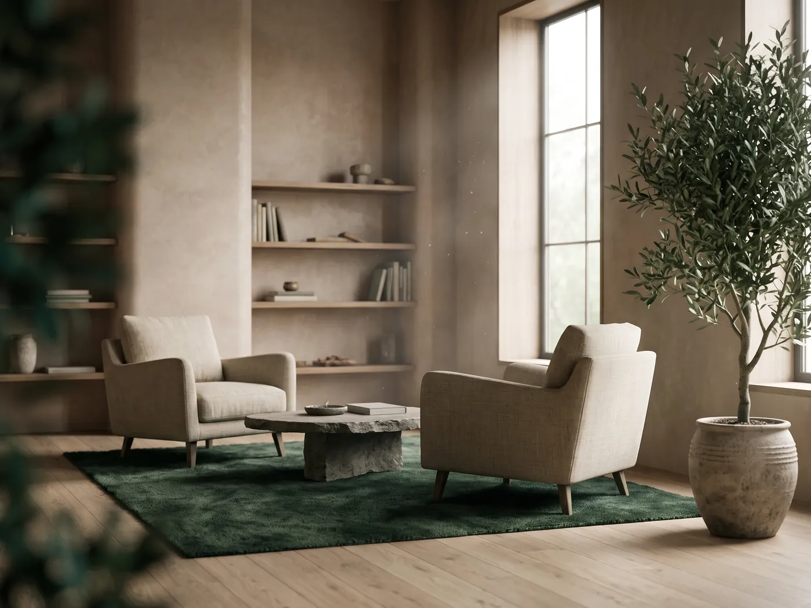

The Studio
A clean, modern interior built for clarity and structure. Soft light, natural materials and quiet visual anchors.
A familiar professional setting helps a client settle in their first session.
Best for
- Focused dialogue
- Goal-setting
- Structured reflection
- First sessions